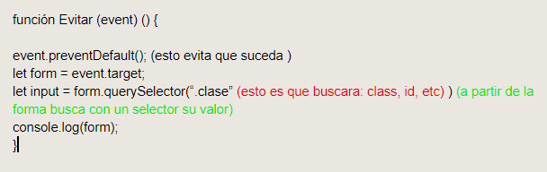
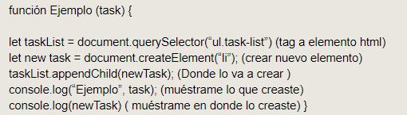
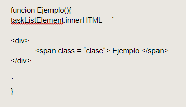

Blog de js: Se usara para ayudar a usauarios nuevos y contar mis experiencias
Segmentado por clases para una mejor comprencion del tema
Que es javaScript
Es un lenguaje de programación interpretado orientado a objetos, imperativo y tipado lo que significa que no es estricto con sus variables
Clase JS01
Un lenguaje de variables, no es tipado por lo que no es estricto con sus variables, sus tipos de datos son: Strings, bool ,int float. puedes combinar palabras
con números, o booleanos con letras, no se necesita usar el ; al final de cada linea de codigo, aprendimos que se llamó Javascript por marketing,
ya que en ese momento, java se estaba utilizando mucho. Algunos ejemplos de no ser tipado son estos:
1 + 3 = Cierto
Cierto = Mario
1.5 + 6 = Manzana
Para declarar una variable se utiliza: let Nombre = Resultado para visualizar se ocupa Console.log
Lo que mas me costo entender es el hecho de no ser tipado y que se podía no usar ; ya que podrás combinar cosas que en otros lenguajes no.
Clase JS02
Tiene una librería interna para poder modificar el documento de html, ya que está hecho para interactuar con elementos de páginas web.
por default tiene muchas utilidades para manipular dichas páginas.
Es decir no se necesita una aplicación externa como mono o visual studio para controlar elementos de interfaz
funcion Nombre ()
{ Que hace }
Como ejemplo:
funcion Ejemplo
let nombre = "cristopher"
Console.log (nombre)
Esto provoca que la función esté declarada, sin embargo de debe llamar primero:
En JS también se pueden obtener referencias de html con los nombres de elementos: Button, li, text, Etc. Estos se llaman a través de funciones:
funcion App () {
let button = document.getElementById(“burger”);
console.log (button);
}
Nota: recuerda usar el tag para que la función sea llamada, en este caso es burguer
Algo que debes saber es que el Html se lee línea por línea, por lo que seguramente tu función esté muy abajo y no se lea al principio,
ya que a un no esta cargada. ¿Como resolvemos esto?
¡ addEventListener! Que recibe de parámetro un string (Texto) que tendrá en si mismo un evento del programa: Click,
done,DOMContentloaded, etc, después las repasamos por lo que queda:
Si quieres cambiar el contenido debes tener primero la referencia, Js consideremos que todo es un objeto, así que para acceder se usa la notación de .
button. textContent (lo que queremos acceder) = “Cristopher” (por lo que le queremos cambiar)
Cuando intentemos correr esta línea debemos ser conscientes que también debe tener una función con sus parámetros y lo que estamos llamando, así mismo,
debe estar dentro de la función :
funcion App ()
{
console.log(“document loaded); (Checamos que cargó el documento)
let (variable) button (elemento html) = document (donde) .
getElementById (Que voy a tomar) (“burger”) (tag de html)
console.log(Button); (Checa que la función corra);
función ToggleButton (Función declarada) () {
button.textContent = “hola”; (por que va a cambiar);
}
}
document.addEventListener(“DOMContentLoaded” , app); (cuando DOM (asi sellama el archivo de HTML)
cargue por completo muéstrame esto)
Aprendí que puedes reutilizar funciones si las tienes declaradas antes de la función donde se llaman
función ToggleButton (Función declarada) () {
button.textContent = “hola”; (por que va a cambiar) ;
}
fuera de App en este caso o fuera de donde se llama en casos extra.
Lo que más trabajo me costó fue entender que es el DOM, saber a qué elemento entrar y lo que iba a obtener, no recordaba que para ser
llamados se debía usar su tag de html o css
Clase Todo 01
Para correr una función debes declarar primero, además de comprobar que el archivo JS está cargado, esto se hace con DOm
como lo vimos en la clase anterior.
Cuando haya una función declarada además de “Click” se puede poner una función que se ejecute en el momento que se aplique la acción declarada:
funcion Dang () (función que llamaremos)
{
console,log (“pium”); (va a checar en la consola que este bien declarada y dira pium)
}
funcion App () (Aquí llamaremos a dicha función )
{
t dangButton = document.getElementById (Que ID va a tomar) = (“Dang”) ( html id);
dangButton.addEventListener (“Click”, Dang); llamamos a la función declarada anteriormente)
Aprendimos a como obtener todo un elemento de html de manera sencilla :
let el (elemento) = document (de donde va a tomar) .getElementById(Tomará un id) (“App”)
(nombre de html)
Así mismo le podemos agregar parametros de css:
el.classList (elemento de clase) . toggle (cambia a ) (“-patas”); (Css parámetro) (básicamente cambia esto por este elemento de css)
Así como podemos tomar ID podemos tomar elementos clase todo esto con la función getElementsByClassName(“ ”);
Así que todos lo que tengan esta clase van a ser editados con parámetros otorgados en css, html o ambas.
Cuando queremos seleccionar un elemento específico de la tasklist solo se necesita usar corchetes duros y el número del elemento [0]
Lo que mas me gusto fue entender el cómo funcionaba el css dentro de js, a un que a un se me dificulta como otorgarle parámetros para
que se cambien cuando se llama a click u otras instancias
Clase Agregar y eliminar elementos
Debemos entender que las paginas de internet se recargan cuando mandas un formulario en html (input type text) debemos hacer que no suceda
eso para que la página reciba la información que necesitamos . ¿cómo lo evitamos ?
función Evitar (event) () {
event.preventDefault(); (esto evita que suceda )
let form = event.target;
console.log(form);
}
Ya que la forma solo vive en contexto de la función definida por eso es que debe ser especificada en las líneas de texto.
Es importante saber el valor de tu texto ya así reemplazamos su valor para darle una nueva tarea.

Existe una variación llamada querySelectorAll que toma todos los elementos con el mismo nombre. Retomando el tema anterior solo reemplacemos:
console.log (input.value)
así como podemos instanciar valores podemos crear elementos, createElement servirá para crear nuevos elementos taggeados de html
let new task = document.createElement(“ul”) (elemento nuevo a crear, tendrá valores estándar a menos que le crees una función en css.
sin embargo debemos instanciarlo, como hemos aprendido las cosas se nombran pero no se llaman por lo que se requiere de otra funcion, aqui
dejare un ejemplo completo de como se podría usar:

Como ya hemos aprendido podrías crearle más elementos desde el texto, hasta una propiedad del DOM.
Así como podemos agregar podemos eliminar, solo necesitamos el elemento remove
funcion deleteEjemplo (event) {
let task = event.target;
task.remove (); }
Solo debemos llamarla en donde la queramos usar con los parámetros aprendidos en el curso
Este ejercicio tiene bastante complejidad al momento de entender cómo es que las paginas usan el refresh, el hecho de
llamar y ejecutar funciones lo hace complicado ya que piensas que con una vez basta
Clase Como remover tareas
En esta clase aprenderemos la importancia de remove, remove puede ser utilizada para todos los elementos y parametros de
Html y css. Eliminar instancias y si se nombra la funcion
Para lograr esto debemos localizar en donde esta el parametro a eliminar accediendo a el task.remove ()(donde esta)
Podemos eliminar li, ul, br, hr, demas elementos con esta sensilla funcion, tambien el eliminar instancias completas
funcion delete (event) {
let task = event.target;
task remove (App); }
Me costo mucho trabajo que en principo parece facil usar remove, pero puede hacer mas cosas de las que crees, mal instanciada
podria borrarlo todo
Clase Todo Render
Aprenderemos cómo duplicar funciones con método distinto ya que lo ideal es tener el contenido por aparte para tener un mejor render y
como se muestra en pantalla.
Lo que haremos será salvar el texto para que el navegador no las borre cuando uses un refresh al enviar un texto etc.
Algo que no habíamos visto es que podemos meter una función dentro de otra función, lo que ayuda, es tener una variable en tu scope,
así que puedes acceder a la misma y llamarla en una sola.
función dobleFuncion{
let taskList= [“hola”, “como estas”] (esta es la funcion que quiero tener dentro de la siguiente) (los corchetes duros
pueden ser un arreglo vacío)
let taskListElement = document.querySelector(“.task-list”); (Elemento que vas a seleccionar)
let segundaFuncion = document.getElementById(“add-task”); (seteamos que funcion llamar)
segundaFuncion.addEventListener(“submit”,parámetro x (cuando quieras que suceda, esto será llamado en otra función) );
(Nos dice que es lo que va a hacer y cuando) );
funcion segundaFuncion (task){ (estamos llamando a nuestra función dentro de “ dobleFuncion”){
taskList.push (task)
Ejemplo (); (cada que suceda la acción indicada en el parámetro anterior se ejecutara el parámetro actual)
funcion Ejemplo(){
console.log(Ejemplo) (revisa que funcione)
}
Lo que hace que todo esto funcione es un nuevo parametro llamado innerHTML que te regresa un string , debemos cambiar las “” por comillas de template literals ´´
eso hará que puedas tener todas las líneas que necesites:
uncion segundaFuncion (task){ (estamos llamando a nuestra función dentro de “ dobleFuncion”) {
taskList.push (task)
Ejemplo (); (cada que suceda la acción indicada en el parámetro anterior se ejecutará el parámetro actual)

Generemos un template configurado para cuando se haga Render, para que cada tarea tenga un elemento de la lista
Clase Todo sort
Objetos y arreglos, han sido mencionados dentro del blog, pero en esta ocasión se tocaran a fondo, sera como un diccionario,
debemos entender que todo dentro de JS son objetos, por lo que todo tiene una propiedad y una función
let Objeto = {
Peso: “100 kg”;
Color: “Morado”;
Ponchada= falso;
}
console.log(Objeto); (puede usarse objeto .Peso, Color; Etc, para obtener un data específico)
Aprenderemos sobre la palabra this para explicartela de mejor manera veamos esto:
función getFullName(){
return this.name + this.lastName; (aplicacion para this en este caso, que quiero obtener de este ejercicio)
}
let Person = {
Name: ”Cristopher”.
Age: “22”.
Cool: true,
Lastname: “Castillo”;
getFullName: getFullName( llamo a mi función)
};
console.log(persona.getFullName();(muéstrame lo que obtuve);
This funciona sin importar donde lo usas, se aplica cuando lo llamas,
por lo que puedes obtener todos los nombres que quieras si agregamos más funciones, entrara a sus parámetros.
Lo más difícil fue que el date no me funciona, lo creo y seteo pro no logro hacer que me de la fecha del momento en que la cree
Clase save & filter
Vamos a crear una funcion que te indicará cuando termines todas tus tareas por hacer así que primero crea una función que se
llame sin tareas y dentro del mismo que te setée, un párrafo donde te felicite.
Así que primero debemos comprobar que el lago de tus tareas sea 0, tasklist.length == 0
Nos vamos a apoyar con una función que agrega tareas y la función push que vimos previamente, esta es la que modificara el largo de nuestra
lista y comprobará cuando su longitud sea de 0
tambien podriamos hacer que cambie con propiedades de css cuando termines, en el momento de render puedes llamar a una funcion para que cambie
de color, asi cuando llegues a 0 te dirá felicidades y cambiará el diseño, solo debes meter una variable que llame al css
Lo que se me hizo más difícil de la clase fue poner filtros para que busquen tus tareas, la verdad es que yo no lo logre